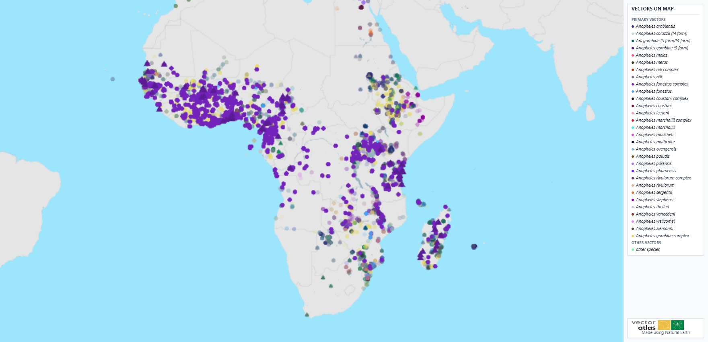

Télécharger des données
Les données peuvent être téléchargées depuis le système à partir de la page de la carte. La dernière section des outils de la carte, à gauche, comporte des boutons permettant de télécharger différentes données, qu’il s’agisse d’une image de la sélection actuelle de données ou des données brutes elles-mêmes.
Le bouton Download map image téléchargera un fichier image montrant l’état actuel de la carte, n’affichant que les données résultant des filtres, ainsi qu’un polygone de zone si un a été sélectionné.
Le bouton Download filtered data téléchargera un fichier csv contenant les données brutes relatives aux points filtrés, utilisable pour des analyses complémentaires.
Un exemple de l’entrée et de la sortie de l’image de la carte est présenté ci-dessous.
